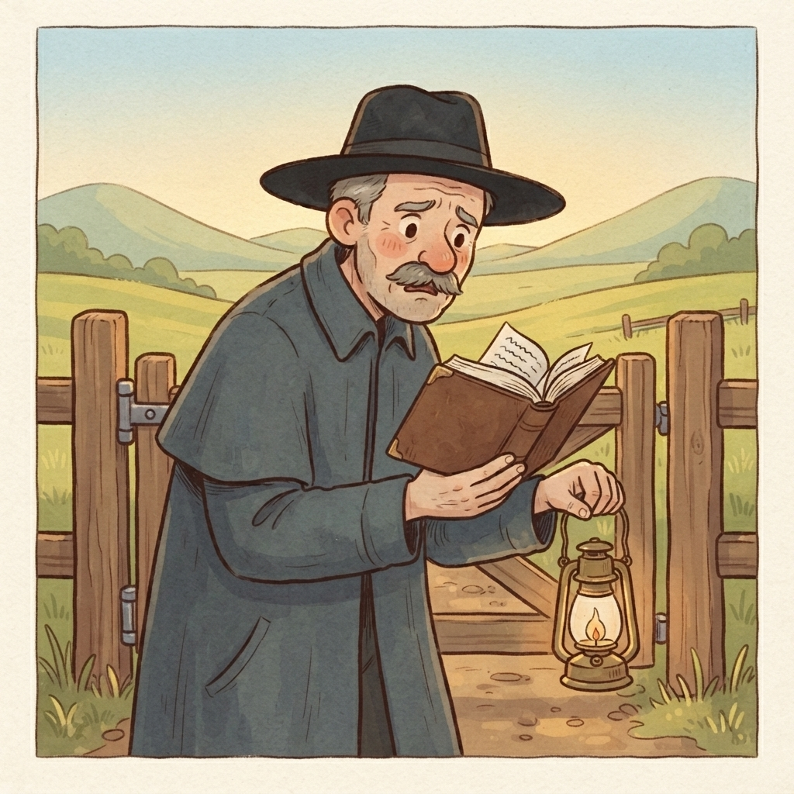

Green frame = the pick used in the game. To swap: python3 .claude/skills/openart-pictures/fetch.py pick story-c3_pieter2 <version>, then import again.

Warm hand-drawn storybook cartoon illustration for a cosy children's farming game. Soft dark-brown ink outlines (not black), flat colours with gentle cel shading and a light paper texture, a cosy earthy palette of honey yellow, moss green, warm browns, brick red and soft sky blue. Friendly rounded characters with rosy cheeks, simple bright eyes and chunky cute proportions. Old-world countryside setting, no modern objects. Eye-level storybook view, full-bleed square illustration that fills the whole frame edge to edge, painted right into all four corners with square corners, no border, no frame, no paper margin, no vignette, no text, no letters, no logos. No collar bells or bells on any animal. Do not show the farmer; no main character in the foreground. Match the drawing style of reference image 1, using it only for the style: paint one single scene that fills the whole frame, not a sheet or a collage. Scene: Pieter the night watchman: a tall, stooped, thin man of about 60 with a grey moustache, a wide-brimmed black felt hat, a long dark blue-grey coat, a brass lantern with a small lit flame, and a thick brown leather book with a blank cover. Close three-quarter view of him at the stick farm gate in warm afternoon light, the lantern still lit but hanging from his hand, holding the open book up in front of his chest and peering down at its pages (rows of plain wavy lines) with a worried, reluctant face, as if looking for a reason to turn round. His eyes are on the book, not on the viewer. Every object is a plain ordinary object with no faces: no eyes or smiles on baskets, jars, sacks, tools, lanterns or buildings. No letters or numbers anywhere; any writing is shown only as rows of plain wavy lines. No people anywhere except those named in the scene, not even tiny ones in the distance or outside a window.